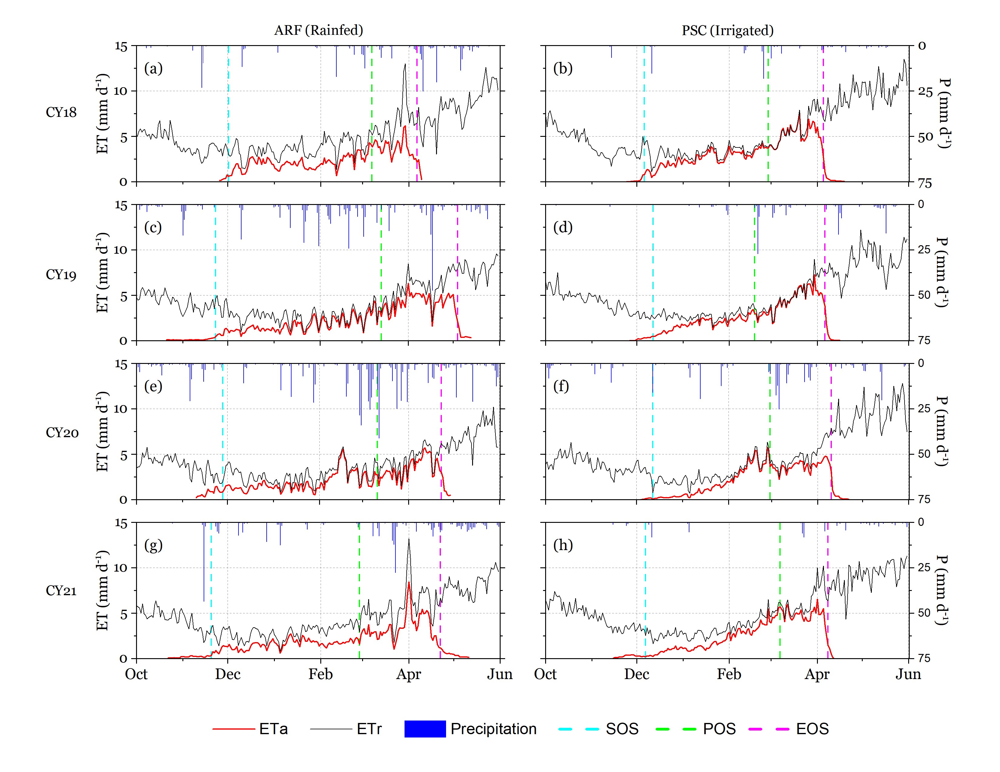
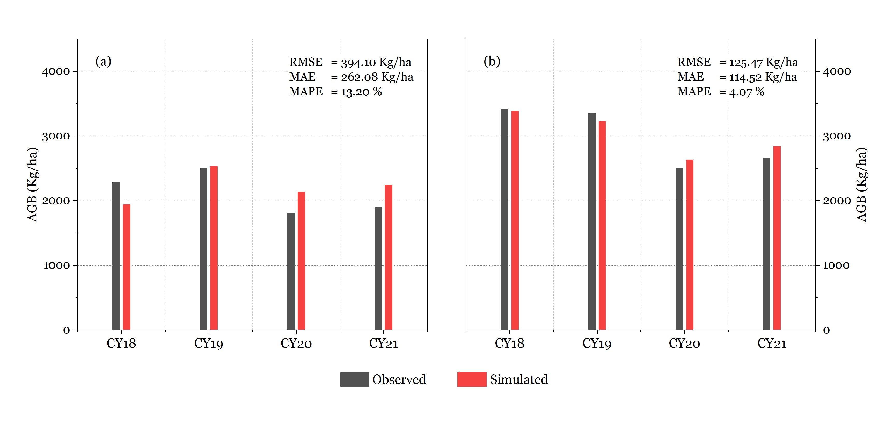

Satellite Data Assimilation for Wheat Yield Estimation
Integrating satellite-derived crop state and water-use observations with a process-based crop model for wheat biomass and yield estimation.
← Back to ProjectsProject Overview
Crop-yield estimation is difficult in regions where field observations are sparse and model inputs are incomplete. My MSc research investigated how remotely sensed observations of crop canopy development and water use could be incorporated into a process-based crop model to support wheat biomass and yield estimation under data-limited conditions.
Landsat NDVI time series were used to characterize crop development and estimate leaf area index (LAI). EEFlux evapotranspiration fraction (ETrF) was combined with daily reference evapotranspiration derived from weather data to estimate actual evapotranspiration (ETa). These satellite-derived state and flux variables were then used to constrain CropSyst simulations rather than relying only on unconstrained model trajectories.
Satellite NDVI was also used to estimate seasonal phenology such as start, peak and end of season dates, using a threshold-based method from published literature. The broader objective was to assess whether automated Earth-observation products could make process-based crop modeling more useful in environments where detailed field measurements are limited.
Approach

Selected Outputs


Scope & Status
This work was completed as my MSc (Hons) Agricultural Engineering research at the University of Agriculture Faisalabad. I am currently preparing a manuscript based on the study.